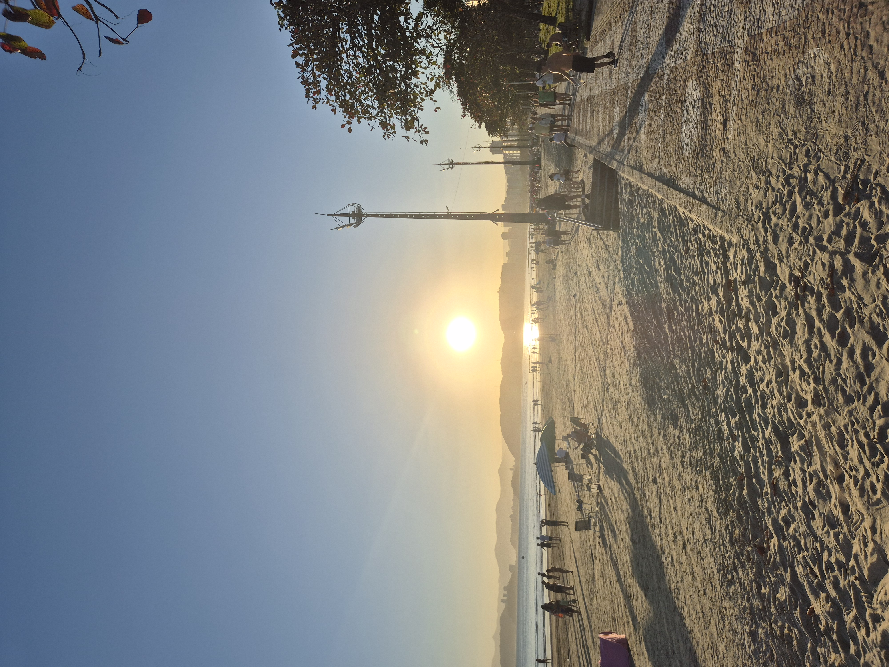
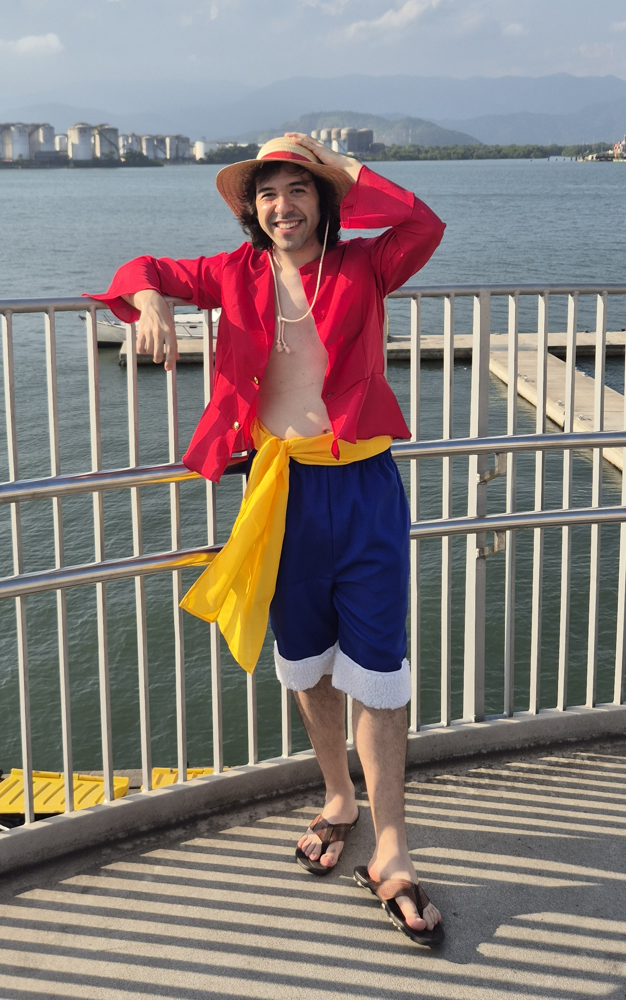
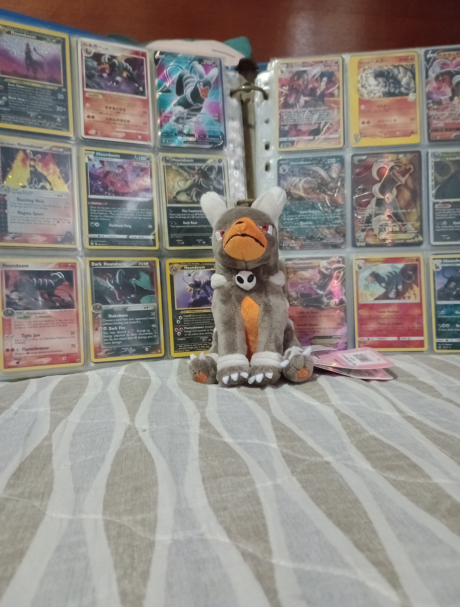
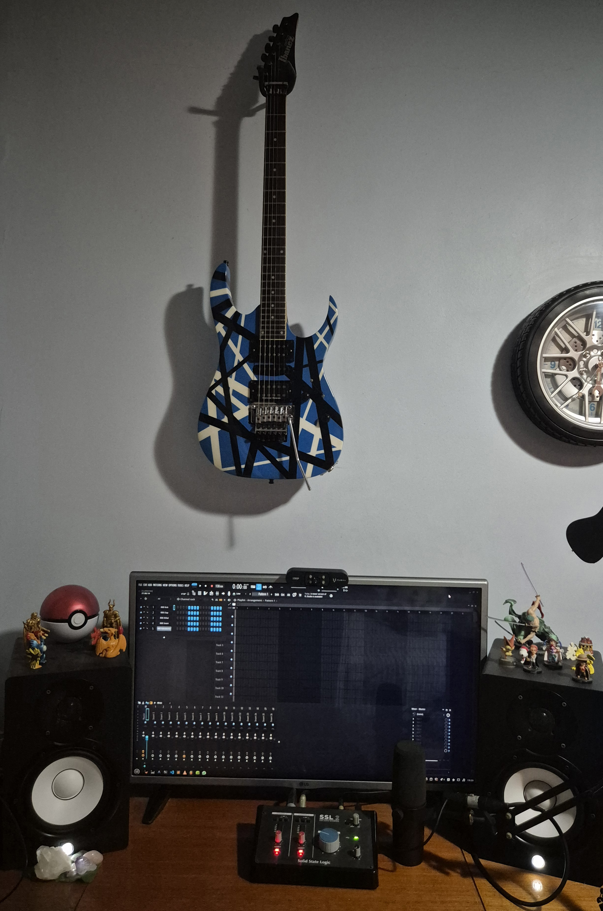
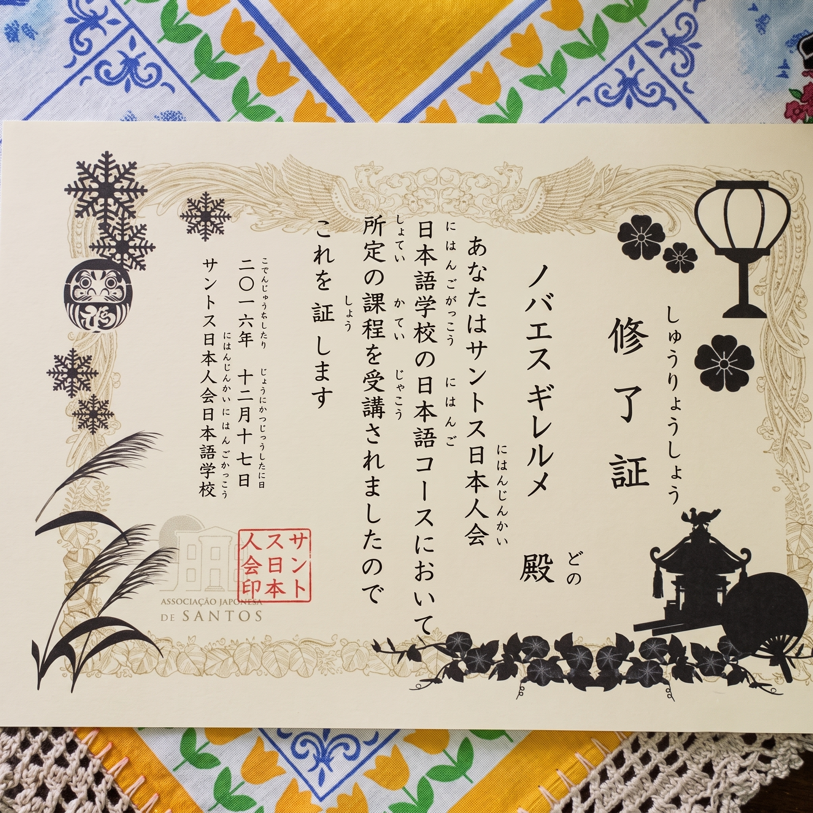

GUILHERME
APOLINÁRIO SILVA NOVAES
Pesquisador de Pós-Doutorado | Programador Gráfico
Criador do @vs.maquina01. Sobre_Mim
Atualmente Pesquisador de Pós-Doutorado em Processamento Digital de Imagens na Universidade de São Paulo (USP), com Doutorado em Processamento de Imagens e Mestrado em Microeletrônica. Especialista em unir pesquisa acadêmica de alto nível em computação visual com arquitetura de hardware de baixo nível e renderização de jogos em tempo real.
02. Tech_Stack
03. Experiencia_&_Educacao
LinkedInProfessor & Líder de Laboratório
Universidade Católica de Santos (UniSantos) | 2021 - Present
Líder de projetos de pesquisa em Computação Gráfica e Computação Visual Acelerada por GPU. Leciona Computação Gráfica, Renderização em Tempo Real e Programação em GPU (CUDA/OpenCL). Foco em unir engenharia aplicada ao rigor acadêmico.
Engenheiro de Visão Computacional
Projeto Confidencial de Logística & Automação | 2025
Desenvolveu e otimizou sistemas de Visão Computacional em tempo real para um ambiente industrial crítico 24/7. Foco em processamento de imagem de alta performance, algoritmos de detecção e integração robusta hardware-software com baixa latência. Habilidades de otimização aplicáveis ao desenvolvimento de engines.
Especialista de Dados (Pipelines em GPU)
Hospital das Clínicas da USP | 2020 - 2024
Construiu pipelines de processamento de imagem em larga escala para dados volumétricos 3D. Desenvolveu modelos de deep learning acelerados por GPU para segmentação de imagens, aplicando habilidades de HPC transferíveis para processamento de texturas e renderização.
Doutorado em Processamento de Imagens & Computação Visual
Universidade de São Paulo (USP) | 2020 - 2024
Tese focada em algoritmos avançados de processamento de imagens e computação visual. Desenvolvimento de pipelines de alta performance e pesquisa fundamental em computação gráfica aplicada.
Mestrado em Microeletrônica
Universidade de São Paulo (USP) | 2018 - 2019
Programa de Engenharia Elétrica com foco em Microeletrônica. Desenvolveu pesquisa em otimização de mapeamento e posicionamento para sistemas Network-on-Chip (NoC) dinamicamente reconfiguráveis utilizando Otimização baseada em Inteligência Artificial (Busca Tabu).
Bacharelado em Ciência da Computação
Universidade Católica de Santos (UniSantos) | 2014 - 2018
Construiu a base em programação de baixo nível e arquitetura de software. No Trabalho de Conclusão de Curso (TCC), desenvolveu um gerador de música MIDI impulsionado por Inteligência Artificial, utilizando Algoritmos Genéticos e Mapas Auto-Organizáveis (SOM).
04. Projetos_&_Pesquisa
Eruption Engine
HD2D ProprietárioUma game engine HD2D proprietária construída do zero. Possui renderização dinâmica, bindless descriptors, deferred shading (5 G-Buffers) e compute shaders para física e iluminação em tempo real. Desenvolvida 100% em C++17 / Vulkan 1.3.


Arquitetura de Servidores de Alta Concorrência
Redes C/C++Mais de uma década mantendo servidores open-source de MMORPG de alta concorrência (rAthena, Hercules). Trabalho extensivo em programação de sockets de baixo nível, multithreading e ofuscação de pacotes para lidar com milhares de conexões.


Sistema Halftone com IA
Patent BR10202600565Possui patente registrada de sistema halftone de alta resolução utilizando Deep Learning (TensorFlow/CUDA). Validado academicamente com aplicações diretas para upscaling de texturas em jogos.
Otimização de Hardware NoC em FPGA
Patent BR1020220061947Desenvolveu método patenteado para mapeamento de tarefas em sistemas Network-on-Chip (NoC) para circuitos integrados programáveis (FPGAs) usando algoritmos Adaptive Tabu Search. Publicado no IEEE LASCAS.
Medical Imaging AI (MAMOs)
Clinical OncologyApplied GPU-accelerated deep learning to handle large 3D volumetric medical datasets. Focus on end-to-end training of convolutional networks for cancer detection in mammography. Published in the Journal of Clinical Oncology.
05. Interesses_Pessoais

:: Hometown
Based in the coastal city of Santos, Brazil. The balance between a quiet coastal life and high-performance computing provides the perfect environment for deep focus and research.
:: Tabletop Strategy
Avid collector and player of Magic: The Gathering. The deep strategic deck-building and complex rule interactions share a strong parallel with software architecture and optimization.

:: Música & Instrumentos
Tocar guitarra, baixo e bateria é minha principal válvula de escape criativa. Sou especialista em recriar e fazer covers de trilhas clássicas de J-RPGs.

:: Anime & Cosplay
Profundamente envolvido na comunidade de animes e jogos. Minha experiência com cosplay foca no Monkey D. Luffy, com favoritos como Gintama, One Piece e Cavaleiros do Zodíaco.

:: Pokémon
Meu Pokémon favorito de todos é o Houndoom (conhecido no Japão como Hellgar / ヘルガー).

:: Engenharia de Áudio & DSP
Minha banda favorita é Van Halen, e eu até construí uma Frankenstrat azul! Além disso, uno a música à programação desenvolvendo meus próprios plugins VST em C++ baseados em Processamento de Sinal Digital (DSP).

:: Língua Japonesa 4 Anos
Conclusão de 4 anos de estudos formais em japonês. Embora não seja fluente no momento, mantenho contato diário com o idioma lendo mangás e jogando em japonês. Com o término do Doutorado, o foco é retomar os estudos para alcançar a fluência total.
Steam Profile
Meus jogos favoritos de todos os tempos são Final Fantasy VI, Final Fantasy Tactics e Ragnarok Online.